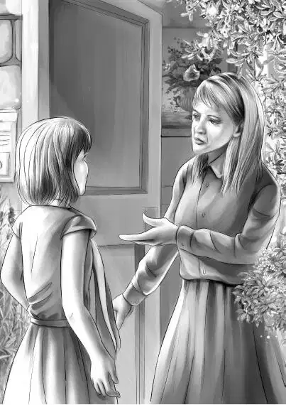

“Here we go， up to a strange mansion to see a strange lady，” said Benny.
“Right！” said Henry. “I’m sure it’s all right to ring a doorbell， even if we don’t get in.”
The four Aldens started along the beach， past the factory， and up the high cliff walk. They could see the mansion above them. It was a large square house， painted white. There was a square room on top that looked out to sea.
The Aldens climbed the steps to the front door and rang the bell. They could hear it ringing inside.
After a few minutes they heard someone coming very slowly. The door opened to show a tall， thin woman with straight gray hair. She did not smile. She just stood there.

Jessie began， “Miss Gray， I hope you will forgive us for coming to see you. But we are staying here for a while， and we want to ask you a favor.”
Elizabeth Gray’s eyes went sharply from one to another. Still she did not smile. Then she said shortly， “Come in.” She stood aside for them to pass. “Go straight ahead，” she said.
Benny thought， “Not a very warm welcome！Maybe we won’t get that schoolhouse after all.”
None of the Aldens knew that they were the first real callers Miss Gray had had for many years.
They all sat down. Miss Gray did not say a word. Henry found it hard to begin， but he knew he must say something. He began， “This is a funny question， Miss Gray. You see， we had no idea we would do this. But some of the children in Port Elizabeth want to go to school this summer to learn more. They asked us to help them. Maybe you think that is a queer idea.”
“No，” said Miss Gray， “I don’t.”
That was all she said. Still no smile.
Benny could not stand this. He said， “We came to ask you if we could use your schoolhouse. It’s a wonderful schoolhouse！It has a big bell and everything.I’d be the one to ring the bell. Could we use it， do you think？”
“What would you do with it？”
Jessie answered this. She said， “We’d have a real school every morning， but we wouldn’t use the schoolhouse at all in the afternoon.”
Violet added， “We’d be very careful of it. We’d keep it clean， too.”
“We’d always remember to lock the door，” said Benny.
“No reason why you can’t have it，” said Miss Gray. “Certainly these children have never learned much.”
“You are very kind，” said Jessie. “We are strangers， and we have asked for a lot. I know that you are interested in the children. Everyone says so.”
“Humph！” said Miss Gray.
Jessie went on， “We haven’t told our grandfather yet. But I’m sure he will think this school is a good idea.”
Benny laughed. He said， “Grandfather will think it is funny， though. Me teaching school！”
The sharp voice said， “What are you going to teach， boy？”
“Well， I don’t know，” said Benny. “Maybe I could teach them about the moon.”
Miss Gray looked at Henry and said， “I’m sure they don’t know much about the moon.”
Benny said， “We didn’t expect to teach school. We came up here to find a mystery.”
“ What？A mystery？” said Miss Gray. “ Why？”
“Because my friend Max said we couldn’t，” said Benny. “He said this island was dull， and we couldn’t have any adventure here.”
Miss Gray said nothing. The Aldens had never met anyone before who talked so little and never smiled.
“Maybe we’d better go now，” said Violet softly.
Miss Gray went stiffly over to a desk and took out two keys. “Back door， front door，” she said. “They are marked.” She gave the keys to Henry.
“We won’t lose them，” said Jessie. “We’ll give them back to you when we go home.”
“Give me your names，” said Miss Gray. She picked up a small notebook from the table. Then the Aldens saw that a new book was lying on the table. The name of the book was The Woman Who Talked Too Much， by E. Gray.
They all thought E. Gray is Elizabeth Gray！She wrote that book. But she certainly doesn’t talk much herself！But nobody dared to ask her any questions.
Jessie gave her the names.
“Your grandfather’s name？”
Henry said， “He is James Henry Alden， and I’m Henry James Alden. We live in Greenfield.”
Miss Gray had heard of the Alden Library in one town and the Alden Museum in another. But she did not say so.
Benny said， “Oh， Grandfather’s wonderful！He’s the best man you ever saw. We’ll go and tell him right now that you are letting us use your schoolhouse.”
The others wanted to go， so they were glad Benny had started toward the door. When they stood on the step they all said， “Goodbye！And thank you！”
Miss Gray did not say goodbye. Instead she called suddenly， “Did you ever see a blond-haired man anywhere who smiles and shows his teeth all the time？”
“No， I’m sorry，” began Henry.
“Don’t be sorry，” said Miss Gray sharply and shut the door.
“Well， what do you know！” said Benny， in a very low voice. “What does she mean by that？”
“I don’t know，” said Henry. “But keep your eyes open， Ben. Miss Gray doesn’t ask questions for nothing.”
The Aldens said no more until they were on the beach.
Then Benny said， “I don’t think Miss Gray is really polite， but I suppose that’s her way.”
“We knew she was different，” said Jessie. “That’s why she lives all alone and never goes out. Maybe she doesn’t like people.”
Henry said， “We know she’s a writer. Maybe she has to be alone. In a way I thought she liked the idea of the school， even if she didn’t say so.”
“Anyway， she gave us the schoolhouse，” said Benny. “And that’s why we went up there.”
Then they walked as fast as they could to find Mr. Alden.
“Oh， Grandfather！” cried Benny when he saw a figure sitting in the sun by the hotel. “Please let us go to Northport this afternoon and buy paints and school things. We’re going to teach school！”
“Teach school！” said Grandfather.
The young people tried not to talk all at once.
“We went up to ask Miss Gray—” began Benny.
“Oh， you did？I thought she didn’t like visitors.”
“Well， that’s right， she doesn’t. That’s sure！But she gave us everything we asked for.”
“Bless my soul！What did you ask for？From a perfect stranger！”
Henry looked straight at his grandfather and said， “It turned out very well， Grandfather. You see the red-haired twins asked us if we would help them with schoolwork. Just to catch up， you know. They said every child on the island would come. So that’s why we wanted the schoolhouse.”
“And she gave it to you？” asked Mr. Alden， laughing.
“Well， yes，” said Jessie. “She doesn’t talk much. But she must have liked the idea， really. She gave us the keys.”
“She gave us a rough time， too，” said Benny.
“Hard to talk to？” asked Mr. Alden.
“Very！” said Henry.
Benny said suddenly， “I’d like to forget Miss Gray. She is no fun at all. I’d rather think about our school. I’m going to ring that bell. And I’ll ring it for recess， too.”
Grandfather nodded. “Yes，” he said. “I know how you feel， Benny. I never saw a bell rope myself without wanting to pull it.” But he could see that his grandchildren had not received a very warm welcome from Miss Gray. He decided to talk with Henry later， when they were alone.
Violet said， “Grandfather， we think Marie and Hal Moss can paint. Wouldn’t it be wonderful if they really could paint well？”
“Yes， my dear， it is a great thing to discover an artist. This school idea is a surprise to me， but it’s fine. I never know what you will think of next！”
Henry said， “We thought we could go over to Northport and buy some paints and school things.”
Mr. Alden laughed. “Yes，” he said， “you can take the car. And maybe you will take me， too.”
Everyone laughed at this. They always had a better time when Mr. Alden came along.
Thirty miles seemed a long drive because they wanted to get there and buy the things. They went first to a store to buy paints.
“Better get enough to go around，” said Mr. Alden. “Give them a bit of fun. It isn’t much fun with two sharing a paintbox.”
In the end they bought ten boxes of paints. The older children could each have a box. They bought colored paper， small scissors， gold stars for Benny， and a stapler.
Jessie said， “Marie told us that there is plenty of chalk in the schoolroom closet. And there are pencils and paper left from last year， and some school books.”
“Well，” said Grandfather， “if you forget anything， we can come again. Let’s eat supper at this little restaurant. It seems to be called the Sea Shell.”
The Aldens noticed a bright red sports car parked in the yard. The top was down. “That car looks strange up here in such a quiet town，” said Henry.
“It looks as if it goes fast，” said Benny.
As they went into the Sea Shell a man with blond hair came out. He smiled at the Aldens and showed all his teeth. He said， “Hi， there！” although he was a perfect stranger. They watched him as he started the red car. Off he went like the wind.
“I told you that car could go fast，” said Benny. “And wait！That man had blond hair， all right， and he smiled and showed all his teeth. There can’t be two men like him！Just what Miss Gray said.”